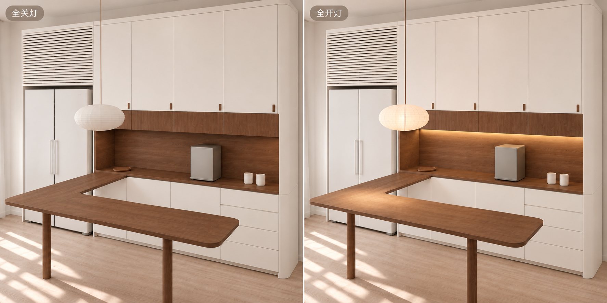
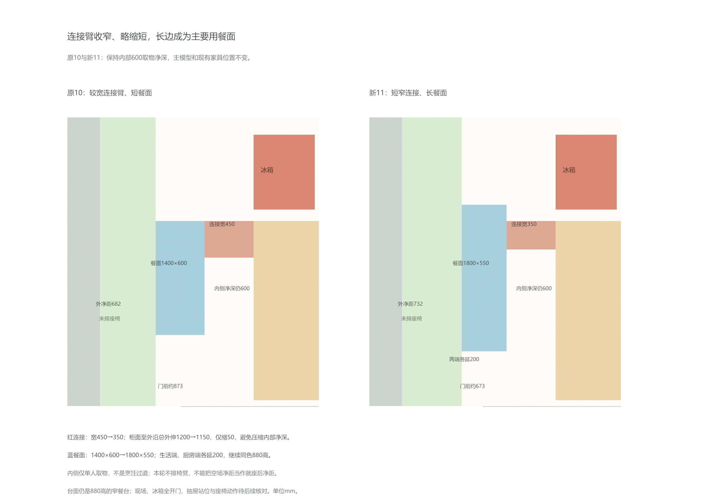

DINING / INDEPENDENT STUDY 11 · 2026.11.06
短连接，胡桃木长餐台
红色连接臂做窄、略缩短，蓝色长餐面延长；根据后续补充，置物区与餐台统一胡桃木、冰箱白色、右端圆边，连接根部齐平。保留柜前取物净深与完整下拉上柜，主模型暂不融合。
餐面1800×550内部取物600统一880高胡桃木＋白冰箱右端R100不排椅凳
调整后的样式与开关灯

左侧：所有人工灯关闭，保留自然光。右侧：置物区灯带和餐台吊灯开启。内置图像生成功能制作的摄影感概念图；尺寸以本页参数和最新原生模型为准。
胡桃木统一台面、置物内衬、薄翻门与桌腿；上下柜为暖白，白色冰箱与柜面形成干净的背景。长餐面用连续圆角边形成一条横向木质长线，右端圆弧则柔化整组柜体的终点。
新增三项外观调整与接头齐平
胡桃木与白色的对比
胡桃木集中在台面与置物区，采用低反光的中深棕色方向；地面继续浅木色，避免整个空间都变深。冰箱沿用普通双开门占位，仅改白色外观，仍未选定产品。
连接根部：零高差
红框根部与后方置物台在同一880水平面；取消凸起的小收口、二层叠板和小台阶。原生模型是一件连续U台面，高度850–880，根部不再另加盖条。
右端圆弧，柜体总宽不增加
暂拟R100圆弧端封，固定端宽100，整体仍2200宽。为让弧线落在真实柜体里，末扇上柜由600模块调整为500模块，末组三抽由700模块调整为600模块；开放置物区延续至圆弧端封，上下实门及完整下拉取物保留。
圆弧端封属于固定饰面，不另做一列高门。弧度与100宽度是本轮设计建议；下拉五金、抽屉内净尺寸仍需在定型时核对。
具体改了多少
| 部位 / mm | 上一版10 | 本轮11 | 设计意图 |
|---|
| 红连接臂宽 | 450 | 350 | 收窄100，减轻连接段的体量 |
| 柜面至外沿总外伸 | 1200 | 1150 | 实际仅缩50；保住内部取物深度 |
| 内侧取物净深 | 600 | 600 | 保持单人取物空间，不继续压窄 |
| 蓝色主餐面 | 1400×600 | 1800×550 | 两端各延200，成为偏窄的长餐台 |
| 台面高度／厚度 | 880／30 | 880／30 | 沿用已确认的同色等高U形 |
| 外侧空场净距 | 682 | 732 | 因餐面收浅50多出50，未计座椅和人体 |
| 台端至餐厨边界 | 872.5 | 672.5 | 只把一半延长量放到厨房端，保持转弯余量 |
红圈不能靠继续压缩内部来大幅变短：原模型的净深已是600。这里采用“收窄连接＋略缩外伸＋加长主餐面”的组合。蓝餐面550深、高880，定位是单侧使用的窄高餐台；不把它说成双侧对坐餐桌。

平面中红、蓝仅对应业主批注，实体为胡桃木。厨房端和生活端各加200；生活端餐面比连接臂多出200圆角外挑。此图比较餐面范围，后续新增的柜体R100圆端以最新实体模型为准。
用餐、取物与灯光
把长边真正留给用餐
1800长的台面可按每人约600宽研究三份餐具的摆位；550深主要服务单侧用餐，适合简餐、早餐及少量共享餐盘。单人餐具可参考约600×350的摆放尺度，仍要按实际餐具和用餐习惯调整。不是对三把椅子已能舒适摆放的确认，本轮继续不排椅凳。
用餐尺度参考IKEA餐区布置建议，用于摆位研究，不能替代本户型的人体与通行核对。
保留间接光，吊灯跟餐面走
保留完整置物区灯带，选型方向仍为3000K暖白、遮灯珠、可调光。纸质柔光吊灯沿横向向新餐面中心调整125，避免偏在连接臂上；吊灯与柜灯分路控制。
上柜继续封顶、完整柜门与下拉取物，右端置物区保持开放；四段式、薄翻门和三横抽保留，不增加玻璃门。改的是餐面比例，并没有取消餐边柜。
当前核对与仍需深化的地方
独立模型已保存并重开：连续U台面850–880，柜前直线段取物净深600，餐面1800×550，右端R100，零可见座椅。主模型五项基线文件前后校验一致，没有更新原VR，也未启动v20。
600只用于单人取物，内圆角需局部回避；开门后的人体站位仍需复核。餐面延到2800，会覆盖2700–3300抽屉段最左侧约100的前方，因此抽屉展开、侧向取物和上柜下拉的使用站位需结合最终五金继续校核。外净距732和门端672.5均未计就座人体，不能当作餐时通道验收。
冰箱右门90度代理姿态至新餐面内缘约143，没有代理几何相交；真实机型散热、开门角度和抽屉取放还未确定。台腿至外沿净深约345是本轮支撑位置，座椅和膝腿动作暂未核；隐藏支撑框架也需深化连接与受力。
查看最新原生尺寸模型